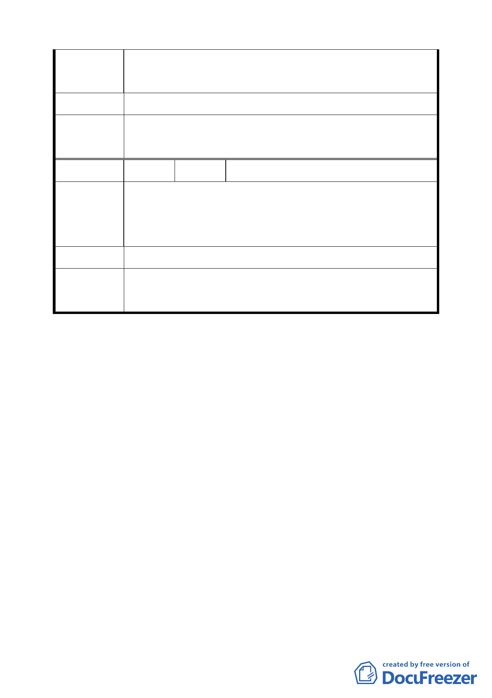

更，請依「各級政府機關互相撥用公有不動產之有償與無償
劃分原則」第 9 點規定辦理有償撥用後，再由市府依法辦理。
建議辦法 不同意變更為保存區。
本案為求街廓完整使用依申請單位臺北市政府所提計畫範圍
委員會決議
變更。
編號
陳情理由
2 陳情人 臺灣銀行
本案計畫區內使用現況，除「天母白屋」建物外，尚有座落東
南側一幢破舊未拆除之本行房屋（非計畫書內標示「已拆
除」）， 爾後可否拆除，應請一併檢討。
建議辦法 請檢討計畫區內現有本行所持有之房屋，未來可否拆除。
計畫書內圖 4 誤繪部分，請申請單位修正。至於該棟建物可
委員會決議
否拆除，請逕依相關法令向市府申請辦理。
討論事項三
案名：擬定臺北市士林區「天母白屋」保存區細部計畫案
說明：
一、 本件係市府以 96 年 3 月 16 日府都規字第 09630526003 號
函送到會，並自 96 年 3 月 19 日起公開展覽三十天（說明
會日期： 96 年 4 月 4 日）。
二、 法令依據：都市計畫法第二十二條、文化資產保存法第三
十三條。
三、 申請單位：臺北市政府（文化局）。
四、 辦理單位：臺北市政府。
五、 計畫位置：詳計畫書第 4 頁，計畫位置示意圖。
六、 計畫理由及內容：詳計畫書。
七、 公民或團體所提意見：2 件，詳如綜理表。
八、 市府 94 年 1 月 27 日公告指定「天母白屋（美軍宿舍）」為
四